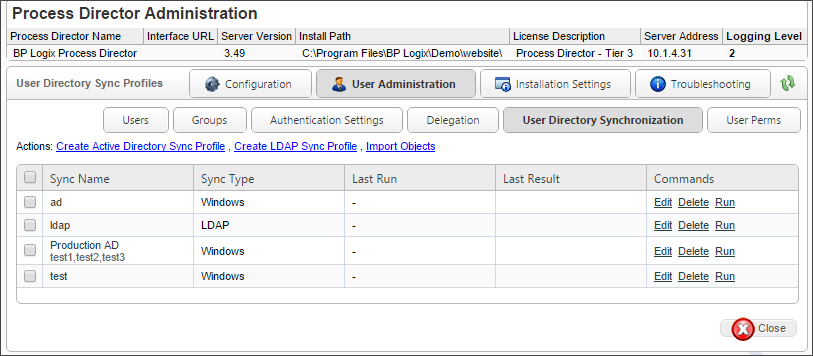
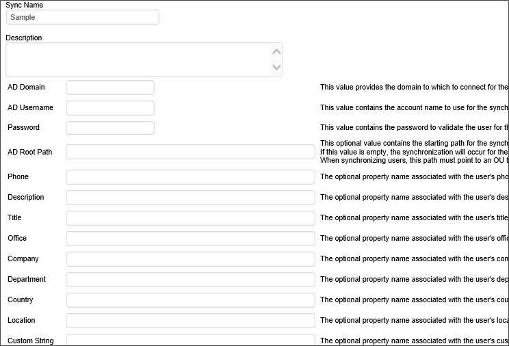
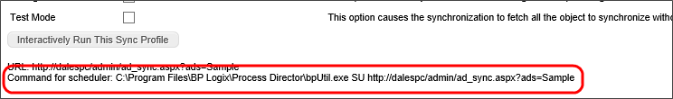

|
|
Lesson Contents | In this Lesson, you will learn the basics of Active Directory user synchronization and object permissions. |
If you are using an LDAP directory (e.g. Microsoft Active Directory) to authenticate your users, their User ID will be automatically added to the Process Director database when they first login. Process Director automatically synchronizes the user and group information when the login occurs. This happens transparently to the user. If you are using Windows Domain security to authenticate users you can still configure Process Director to synchronize user information with your LDAP server. This enables your users to authenticate against the Windows Domain, but still have their email address and user name (Alias) synchronized with the LDAP settings.
There are a couple of limitations to using this technique alone. It requires that a user logs into Process Director before it “knows” of that user and the groups the user belongs to. This means that you cannot add users to a workflow step, or specify users in permissions until after that user logs into Process Director. Additionally, users or groups that are changed or removed in LDAP will still exist in the Process Director database.
To address these scenarios, there is a user directory synchronization utility that will synchronize your LDAP user information with Process Director. The synchronization utility will only synchronize attributes such as the name and email address, but will not copy over any passwords. Passwords are only stored on your LDAP server – the LDAP server is responsible for authentication.
This utility can be run manually, or scheduled to perform an automatic synchronization. To perform the synchronization, navigate to User Administration à User Directory Synchronization. Each sync configuration is a profile. You can create many profiles to sync specified users or groups of users. These profiles will be saved to the database so you may run them at any time. You may also create a profile by selecting the Create AD Sync Profile link.

Each profile will, after running display when the synchronization was last performed, and the result of the synchronization.
Configure the profile by selecting the appropriate values for the settings displayed. Ensure that you have selected OK to save the settings to the profile.

To execute a profile, navigate to the User Directory Synchronization page and select the Run command from the profile you would like to run. This will display the AD Sync Run page. The AD Sync Run page displays the profile configuration with the option of changing your settings for that run instance.
If the synchronization occurs successfully, you will see the number of users and groups that were synchronized.
To automatically schedule the profile to run at regular intervals (for example, every night at midnight) use the Microsoft Windows Scheduled Tasks utility. This utility enables you to schedule and test commands executed on a regular basis.
Do not schedule IEXPLORE.EXE because the web browser will never close. Rather, use the bputil.exe command to run the web page. Process Director has created this path for you. Navigate the AD Sync Run Page and copy and paste the URL under Directory Connection to the Windows Scheduler.

For example, enter this command in the “Run” dialog box to schedule the synchronization:
"PATH\bputil.exe" SU "http://localhost/WD/admin/ad_sync.aspx?ads=Profile_Name"
where PATH is the installation directory for Process Director (e.g. c:\Program Files\BP Logix\Process Director\). Enter the appropriate credentials in the Windows Scheduler when prompted. Use the “Schedule” tab to set the times to run the command. Consult the Microsoft help for more information on this utility.
 You must enclose the URL to ad_sync.asp in double quotes.
You must enclose the URL to ad_sync.asp in double quotes.
AD users will be created in the Process Director database when synchronization is performed and when the user logs in. The user ID, display name, email address and organization hierarchy will be kept in sync. If a user is renamed in AD it will be reflected in the Process Director database during a login or a synchronization operation. If a user is deleted in AD, the user will be disabled in the Process Director database. It is recommend that the user ID be left as disabled instead of deleting it so that the user history is maintained (e.g. workflows they participated in, documents they modified, etc.).
The integration will synchronize the AD groups. These will be created as groups in Process Director. When using AD groups, if you delete or rename groups in AD they will be removed from the Process Director database. When renaming an AD group, you should rename it in the Process Director User Administration Group section first. This is not required for AD users.
Administrators of Subscription, Cloud, or on-Premise installations with the Compliance Option will notice an additional Object Permissions menu button in the IT Admin Interface. Process Director provides a searchable report of all object permissions, called the Permissions Report. The Permissions Report can be accessed by clicking the Object Perms button in the Configuration section of the IT Admin area.

TheObject Permissions section enables you to find specific objects and view a report of permissions that are applicable to that object.
In the top portion of the Permissions Report screen, there are five filter fields you can use to create relatively specific searches to return a list of only those permissions that interest you. You can filter the object permissions by:
Entering a value in any or all of the filter fields, then clicking the Search button, will ensure that the Permissions Report displays only object permissions that match the entered values. You can clear all of your search filters and start from scratch with a new search by clicking the Clear Filter button.
Each object displayed in the search results identifies the object, folder path, grant type, and a column for each of the permissions.

The Permissions Report can be exported to a comma-separated text file that is viewable in Excel by clicking the link labeled, Export Permission Data to CSV.